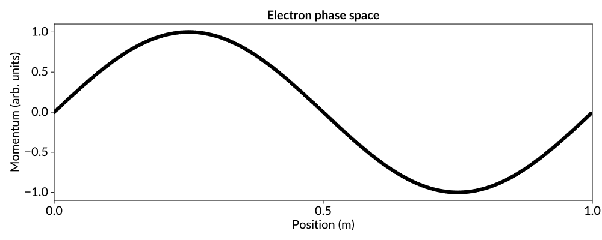
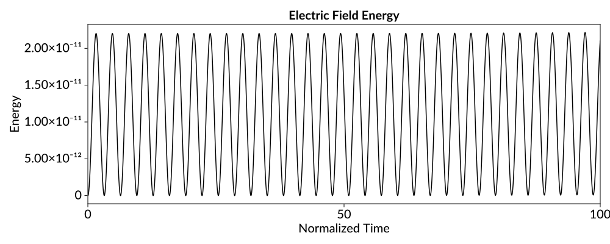
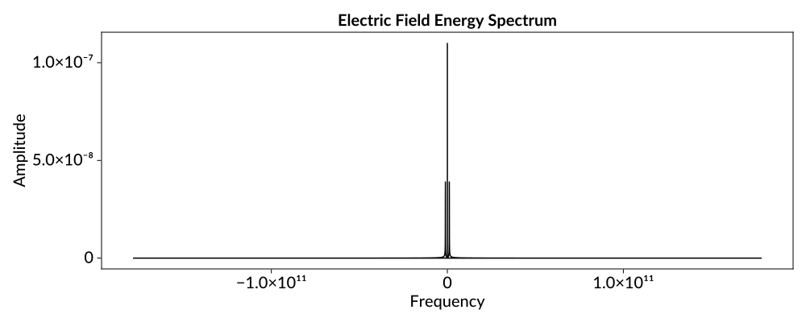
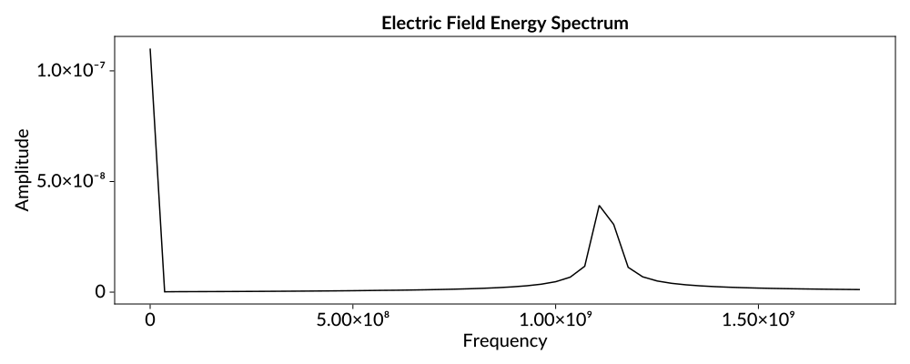

Tutorial: Langmuir oscillations


In this tutorial, you will use ParticleInCell2 to model one of the simplest phenomena in plasma physics: an electrostatic (or Langmuir) oscillation. This tutorial is part of a series of examples that uses ParticleInCell2 to demonstrate the basic plasma physics concepts that are covered in Birdsall and Langdon's classic PIC textbook.
A Langmuir oscillation occurs when a slab of charge in a uniform plasma is displaced. The resulting charge density gradient creates a restoring force that causes the displaced slab of charge to return to its original position. But–-just as in a classical pendulum oscillation–-the momentum of the charge carries it past its equilibrium point, creating an opposite charge gradient, and a restoring force in the opposite direction. As a result, the slab of charge oscillates around its equilibrium forever (at least in this idealized model that ignores possible damping mechanisms). For a plasma composed of a single mobile species $s$ with mass $m_s$ and charge $q_s$, the frequency of this oscillation is given by
\[\omega_{p,s} = \sqrt{\frac{n_s q_s^2}{\epsilon_0 m_s}}\]
where $n_s$ is the number density of the plasma and $\epsilon_0$ is the permitivity of free space. Notice that the plasma frequency has a $m_s^{-1/2}$ dependence, and thus the lightest species (typically electrons) will dominate the dynamics of a plasma oscillation. For this reason, we will only model the dynamics of the electrons in our simulation.
Simulating a cold electron plasma
We begin by loading the ParticleInCell2 package. Additionally, we load CairoMakie which is a backend for Makie that can generate beautiful, publication-quality graphics.
using ParticleInCell2
using CairoMakieWe begin by creating some electrons to move in the simulation. For even a tiny simulation volume, there are far too many physical electrons to simulate each one individually. Instead, PIC algorithms group physical particles into 'macroparticles'. The distribution of macroparticles in phase space serves as an approximation for the phase space distribution of physical particles. We arbitrarily choose a simulation domain of length one, and a nominal electrons number density of $10^{14}$. Then, for a given number of macroparticles, we can calculate the number of physical electrons represented by each.
sim_length = 1.0
number_density = 1e14
num_macroparticles = 320
particles_per_macro = number_density * sim_length / num_macroparticles3.125e11We distribute the macroparticles evenly across the simulation domain.
positions = collect(0:num_macroparticles-1) ./ num_macroparticles;In order to seed a Langmuir oscillation, we give the electrons a sinusoidal velocity perturbation. This corresponds to the moment in a Langmuir oscillation when the slab of charge has reached equilibrium, but is being carried past by its momentum. This perturbation is defined by a wavenumber k and an amplitude.
k = 1 * 2pi / sim_length
amplitude = 1e3
elec_mass = 9e-31
momentums = (particles_per_macro * elec_mass * amplitude) .* sin.(positions .* k);We can visualize the initial condition of the electron macroparticle by plotting the initial phase space.
scatter(
positions,
momentums;
axis = (;
title = "Electron phase space",
xlabel = "Position (m)",
ylabel = "Momentum (kg m / s)",
),
)
Finally, we create a VariableWeightSpecies which holds the all of the macroparticles. Additionally, we must pass the value of particles_per_macro, which is used to calculate the charge and mass of the macroparticles.
electrons = ParticleInCell2.electrons(positions, momentums, particles_per_macro);Now we address the 'cell' piece of particle-in-cell by creating a grid. Because Langmuir oscillations are a one-dimensional phenomena, we will choose to perform a 1D simulation.
The choice of grid resolution is determined by the scale of the smallest relevant dynamics begin simulated. For a Langmuir oscillation, the scale of the dynamics is set by k, and so the simulation could likely accomplished with as few as 4 or 8 cells. However, this is not a computationally demanding simulation, and so we arbitrarily choose to use 32 equally spaced (i.e. uniform) grid points. Additionally, we make the simulation domain periodic.
num_cells = 32
dx = sim_length / num_cells
periodic = true
grid = UniformCartesianGrid((0.0,), (sim_length,), (num_cells,), (periodic,));Next, we set up the required fields for an electrostatic PIC simulation. In a basic PIC cycle, we first compute the charge density, rho, on the grid points. We then compute the corresponding electric potential, phi. The electric field is conventionally determined in a two step process. First the potential, which is located at the nodes of the grid cells, is finite differenced to the edges of the cells, producing an edge electric field, Eedge. The edge electric fields are then averaged to get the electric fields located at the nodes, Enode.
When creating the fields, we must specify the underlying grid on which the field is based, the location of the values of the field (i.e. are the field values located at the nodes of each cell? The edge?), the dimension of the field, and the number of guard cells surrounding the field.
field_dimension = 1
lower_guard_cells = 1
rho = Field(grid, ParticleInCell2.node, field_dimension, lower_guard_cells)
phi = Field(grid, ParticleInCell2.node, field_dimension, lower_guard_cells)
Eedge = Field(grid, ParticleInCell2.edge, field_dimension, lower_guard_cells)
Enode = Field(grid, ParticleInCell2.node, field_dimension, lower_guard_cells);At this point, we must choose a timestep for the simulation. We would like to use a large timestep so that more of the systems dynamics can be observed with the same number of steps. However, we must resolve the fastest timescale of the dynamics that we are trying to simulate. In this case, we must resolve the plasma frequency. Additionally, we must choose a timestep that is short enough that particles do not cross more than one cell per timestep to prevent numerical instabilities from arising. For the oscillation amplitude that we have chosen, the particles do not move fast enough for the CFL condition to matter, and so we will choose our timestep based on the expected plasma frequency.
epsilon_0 = 8.8e-12
elec_charge = 1.6e-19
elec_mass = 9e-31
expected_plasma_freq = sqrt(number_density * elec_charge^2 / elec_mass / epsilon_0)
expected_plasma_period = 2pi / expected_plasma_freq1.1051531770007306e-8Once again, this is not a computationally demanding simulation, and so we will choose a relatively small timestep for improve numerical accuracy. You can play with increasing the timestep, and see when the simulation results begin to deteriorate.
dt = 5e-115.0e-11In the final step of the setup, we create all of the simulation steps required to do the electrostatic simulation. In this tutorial, we will not discuss the details of PIC simulation, but you can find more information about the PIC simulation cycle elsewhere in this documentation.
charge_interp = BSplineChargeInterpolation(electrons, rho, 1)
comm_rho = CommunicateGuardCells(rho, true)
field_solve = PoissonSolveFFT(rho, phi)
comm_phi = CommunicateGuardCells(phi)
finite_diff = FiniteDifferenceToEdges(phi, Eedge)
comm_Eedge = CommunicateGuardCells(Eedge)
elec_ave = AverageEdgesToNodes(Eedge, Enode)
comm_Enode = CommunicateGuardCells(Enode)
push = ElectrostaticParticlePush(electrons, Enode, dt)
comm_electrons = CommunicateSpecies(electrons, grid);Now we are ready to run the simulation. We will simulate the plasma for 1000 timesteps, and at each step, we will calculate the electric field energy,
\[U_E = \int |E(x)|^2 \,\mathrm{d}x.\]
This field energy will oscillate as the electrons move in and out of equilibrium, and so we can use it to observe the Langmuir oscillation.
n_steps = 1000
electric_field_energy = Vector{Float64}(undef, n_steps)
for n = 1:n_steps
# Calculate the electric field energy
electric_field_energy[n] = 0
for I in eachindex(Enode)
electric_field_energy[n] += (dx * epsilon_0 / 2) * (Enode.values[I])^2
end
# TODO
rho.values .= 0
step!(charge_interp)
step!(comm_rho)
step!(field_solve)
step!(comm_phi)
step!(finite_diff)
step!(comm_Eedge)
step!(elec_ave)
step!(comm_Enode)
step!(push)
step!(comm_electrons)
endWe can now visualize the electric field energy to see the plasma oscillation.
times = collect(range(1, n_steps)) .* dt
lines(
times,
electric_field_energy;
axis = (; title = "Electric Field Energy", xlabel = "Time (s)", ylabel = "Energy"),
)
Notice that the electric field energy is slowly growing over time, which is unphysical. We will discuss where this numerical instability comes from– and how it can be avoided–later. But for now, we can still use the electric-field-energy time series to calculate the plasma frequency. First, let's plot the Fourier transform of the electric field energy.
using FFTW
freqs = fftfreq(n_steps, 1 / dt) .* 2pi
freq_amps = abs.(fft(electric_field_energy))
lines(
freqs,
freq_amps;
axis = (;
title = "Electric Field Energy Frequency Spectrum",
xlabel = "Frequency (1/s)",
ylabel = "Amplitude",
),
)
It is hard to see what is happening at the low frequencies, so let's zoom in on the positive low frequencies.
cutoff_index = round(Int, n_steps * 0.05)
lines(
freqs[1:cutoff_index],
freq_amps[1:cutoff_index];
axis = (;
title = "Electric Field Energy Frequency Spectrum",
xlabel = "Frequency (1/s)",
ylabel = "Amplitude",
),
)
Next, we find the maximum frequency. We don't care about the spike at zero frequency (that is just a consequence of the electric field energy being a strictly positive quantity) so we first set its amplitude to zero, and then find the largest remaining amplitude, and it's corresponding frequency.
freq_amps[1] = 0
max_index = findmax(freq_amps)[2]
max_freq = freqs[max_index]
# Divide by 2 because the electric field energy goes through a maximum twice
# per plasma oscillation, and take the absolute value because we don't care
# about the phase of the oscillation.
plasma_freq = abs(max_freq / 2)5.654866776461627e8Finally, we can compare this to the theoretically expected result:
relative_error = (plasma_freq - expected_plasma_freq) / expected_plasma_freq-0.005362140699342522Less than 1% error. Not bad!
Adding temperature to the plasma
In the previous simulation, the electric field energy grew unphysically throughout the simulation. This was a result of the "grid-heating instability", which occurs when the grid does not resolve the plasma Debye length, which for an electron plasma is given by
\[\lambda_{D,e} = \sqrt{\frac{\epsilon_0 k_B T}{n_e q_e^2}},\]
where $k_B$ is the Boltzmann constant and $T_e$ is the electron temperature.
When the Debye length of a plasma is underresolved, the plasma will unphysically heat, causing the Debye length to grow until it is resolved by the grid. Many strategies have been developed to mitigate this instability, but in this tutorial, we will simply give our plasma sufficient thermal energy to begin so that the simulation will be stable against the grid-heating instability.
Let's calculate the required electron temperature in the previous simulation so that the 32 cell grid will resolve the Debye length. We set $\lambda_{D,e} = \Delta x$, and solve for $T$ to find
boltzmann_constant = 1.381e-23
dx^2 * number_density * elec_charge^2 / epsilon_0 / boltzmann_constant2.0571390955170825e7Alternatively, we can express this temperature in terms of electron volts as
dx^2 * number_density * elec_charge / epsilon_01775.5681818181818We will define a function that takes an electron density, electron temperature, and oscillation wavenumber, and returns a measured plasma frequency.
function measure_plasma_frequency(number_density, temperature, wavenumber)
sim_length = 1.0
num_cells = 32
dx = sim_length / num_cells
num_macroparticles = 320
particles_per_macro = number_density * sim_length / num_macroparticles
perturb_amplitude = 1e3
elec_mass = 9e-31
boltzmann_constant = 1.381e-23
thermal_velocity = sqrt(3 * boltzmann_constant * temperature / elec_mass)
positions = collect(0:num_macroparticles-1) ./ num_macroparticles
momentums =
(particles_per_macro * elec_mass) .*
(perturb_amplitude .* sin.(positions .* wavenumber) .+ thermal_velocity .* randn.())
electrons = ParticleInCell2.electrons(positions, momentums, particles_per_macro)
grid = UniformCartesianGrid((0.0,), (sim_length,), (num_cells,), (true,))
field_dimension = 1
lower_guard_cells = 1
rho = Field(grid, ParticleInCell2.node, field_dimension, lower_guard_cells)
phi = Field(grid, ParticleInCell2.node, field_dimension, lower_guard_cells)
Eedge = Field(grid, ParticleInCell2.edge, field_dimension, lower_guard_cells)
Enode = Field(grid, ParticleInCell2.node, field_dimension, lower_guard_cells)
dt = 5e-11
charge_interp = BSplineChargeInterpolation(electrons, rho, 1)
comm_rho = CommunicateGuardCells(rho, true)
field_solve = PoissonSolveFFT(rho, phi)
comm_phi = CommunicateGuardCells(phi)
finite_diff = FiniteDifferenceToEdges(phi, Eedge)
comm_Eedge = CommunicateGuardCells(Eedge)
elec_ave = AverageEdgesToNodes(Eedge, Enode)
comm_Enode = CommunicateGuardCells(Enode)
push = ElectrostaticParticlePush(electrons, Enode, dt)
comm_electrons = CommunicateSpecies(electrons, grid)
n_steps = 1000
electric_field_energy = Vector{Float64}(undef, n_steps)
epsilon_0 = 8.8e-12
for n = 1:n_steps
# Calculate the electric field energy
electric_field_energy[n] = 0
for I in eachindex(Enode)
electric_field_energy[n] += (dx * epsilon_0 / 2) * (Enode.values[I])^2
end
# TODO
rho.values .= 0
step!(charge_interp)
step!(comm_rho)
step!(field_solve)
step!(comm_phi)
step!(finite_diff)
step!(comm_Eedge)
step!(elec_ave)
step!(comm_Enode)
step!(push)
step!(comm_electrons)
end
freqs = fftfreq(n_steps, 1 / dt) .* 2pi
freq_amps = abs.(fft(electric_field_energy))
freq_amps[1] = 0
max_index = findmax(freq_amps)[2]
max_freq = freqs[max_index]
plasma_freq = abs(max_freq / 2)
return plasma_freq
endmeasure_plasma_frequency (generic function with 1 method)For a warm plasma, the thermal pressure acts as an additional restoring force on the plasma oscillation. It can be show that the modified dispersion relation (frequency response as a function of wavenumber) is given by
\[\omega^2 = \omega_{p,e}^2 + \frac{3 k_B T_e}{m_e} k^2.\]
Notice that when $T_e = 0$, the frequency is the plasma frequency, regardless of the wavenumber.
Let's run a few simulations and verify that this relationship holds.
temperatures = [0, 0.1, 1, 10]
measure_plasma_frequency.(1e14, temperatures, 1 / 2 * pi)4-element Vector{Float64}:
5.654866776461627e8
5.654866776461627e8
5.654866776461627e8
3.1415926535897934e8We can compare this to the expected result.
function warm_plasma_freq(number_density, temperature, wavenumber)
epsilon_0 = 8.8e-12
elec_charge = 1.6e-19
elec_mass = 9e-31
boltzmann_constant = 1.381e-23
square_plasma_freq = number_density * elec_charge^2 / elec_mass / epsilon_0
correction_factor = boltzmann_constant * temperature * wavenumber^2 / elec_mass
return sqrt(square_plasma_freq + correction_factor)
end
warm_plasma_freq.(1e14, temperatures, 1 / 2 * pi)4-element Vector{Float64}:
5.685352436149611e8
5.685352436182908e8
5.685352436482581e8
5.685352439479299e8Clearly, the restoring force of the pressure is not large enough to make a difference in this case.
This page was generated using DemoCards.jl and Literate.jl.